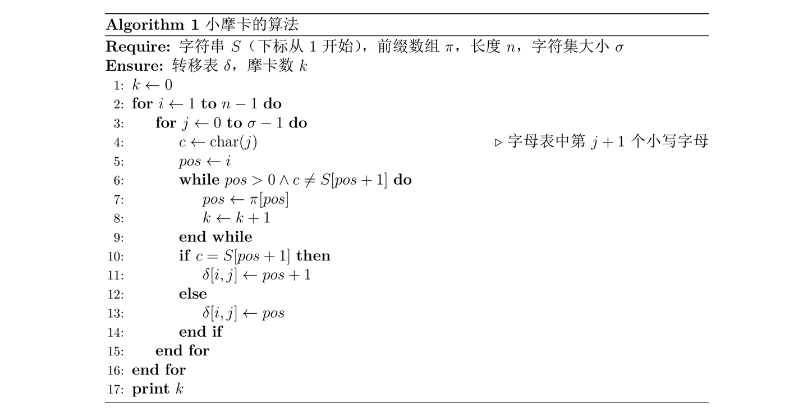
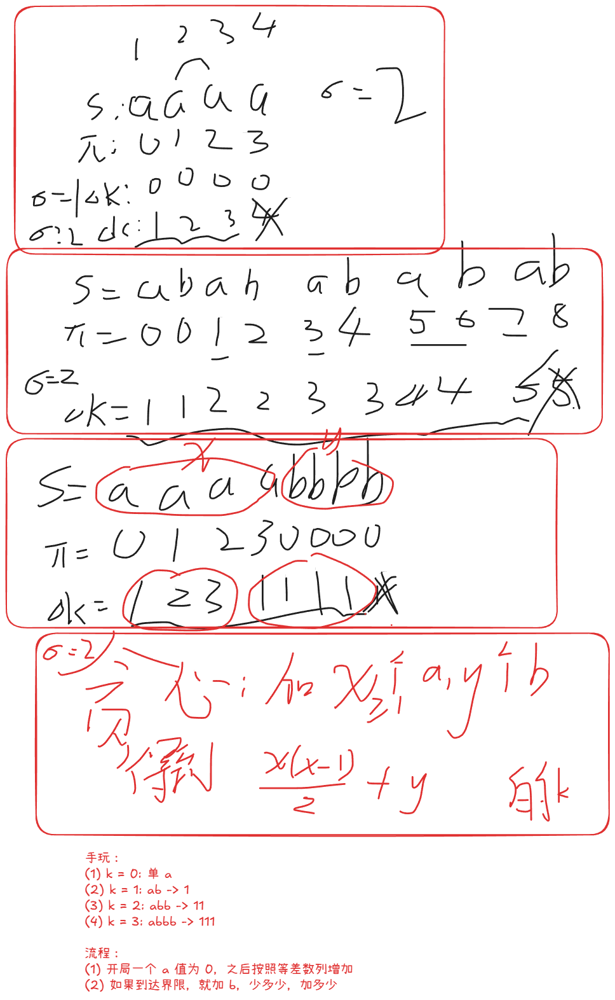

2026“钉耙编程”中国大学生算法设计暑期联赛（1）
1004 搭积木【排序贪心】
Problem Description
小 W 正在用积木搭建一个巨大的结构。
有 块积木，编号为 到 。第 块积木有两个整数属性 和 。
一开始，小 W 打算一块一块地搭建。对每块积木 ，给定一个积木 ，表示积木 必须直接放在积木 的上方。如果 ，则积木 位于整个结构的最底部。题目保证这些要求是自洽的，并且最终会形成一个包含所有积木的完整结构。
后来，小 W 觉得逐块搭建太无聊了。他想到一种新方法：可以先把若干块积木组装成一个结构，再一次性把整个已组装结构放到另一个结构上。具体地，对于两个不交的连通集合 和 ，若 中存在唯一的点 使得 ，那么 就可以被放在 的上面。
也就是说，在满足所有原始直接上下关系的前提下，小 W 可以自由选择执行放置操作的顺序，也可以提前组装某些局部结构。
一次放置操作中，假设一个已经组装好的结构被放到另一个结构的上方。令：
为上方结构内所有积木的 之和；
为下方承托结构内所有积木的 之和。
这次放置操作的代价定义为 。
操作完成后，两个结构会合并为一个更大的结构。
注意，下方承托结构指的是当前已经组装在一起的整个结构，而不只是单块积木或它的祖先。
小 W 想知道，在所有合法的搭建顺序中，最小总代价是多少。
Input
本题单个测试点内有多组测试数据。
第一行输入一个正整数 ，表示测试数据组数。
接下来按如下格式输入 组数据：
第一行输入一个整数 ，表示积木数量。保证单个测试点内所有测试数据的 之和不超过 。
第二行输入 个整数 。
第三行输入 个整数 。
第四行输入 个整数 。其中 ，对于所有 ，保证 。
Output
对于每组数据，输出一行一个整数，表示搭建完整结构所需的最小总代价。
Sample Input
1
3
3 10 1
5 1 10
0 1 1Sample Output
56Hint
样例中，积木 和 都必须直接放在积木 上方。
如果先把积木 放到积木 上，代价为 。
此时下方结构包含积木 ，其 之和为 。再放置积木 ，代价为 。
总代价为 ，可以证明这是最优的。
Solution
类树上 Smith rule 合并贪心
先合并谁的问题，当一个父节点 和子节点 与 合并时，可以先合并 当且仅当
不开 long long 见什么
不仅 ans 要开 __int128，而且 比较器 的 乘法要开 long long
code
#include<bits/stdc++.h>
using namespace std;
using LL = long long;
const int N = 2e5 + 5;
void write(__int128 x) {
if (x < 0) x = -x, putchar('-');
if (x == 0) putchar('0');
stack<char> S;
while(x) S.push('0' + x % 10), x /= 10;
while(S.size()) putchar(S.top()), S.pop();
putchar('\n');
}
struct DSU {
vector<int> f;
void init(int n) {
f = vector<int>(n);
iota(f.begin(), f.end(), 0);
}
int find(int x) {
return f[x] == x ? x : f[x] = find(f[x]);
}
bool merge(int x,int y) {
x = find(x), y = find(y);
assert(x != y);
if (x == y) return false;
f[y] = x;
return true;
}
}D;
int T;
int t[N];
struct Node{
LL a, b, u, t;
bool operator<(const Node& o) const {
return b*o.a != a*o.b ? b*o.a > a*o.b : t > o.t;
}
};
int n;
int a[N], b[N], f[N];
priority_queue<Node> Q;
void solve() {
cin >> n;
for (int i = 1; i <= n; i++) cin >> a[i];
for (int i = 1; i <= n; i++) cin >> b[i];
for (int i = 1; i <= n; i++) cin >> f[i];
D.init(n + 1);
for (int i = 1; i <= n; i++) Q.emplace(a[i], b[i], i, t[i] = ++T);
__int128 ans = 0;
while(Q.size()) {
auto [_a, _b, u, _t] = Q.top(); Q.pop();
if (t[u] != _t) continue;
if (f[u] == 0) continue;
int ff = D.find(f[u]);
if(D.merge(ff, u)) {
ans += _a * b[ff];
a[ff] += _a;
b[ff] += _b;
Q.emplace(a[ff], b[ff], ff, t[ff] = ++T);
}
}
write(ans);
}
int main() {
ios::sync_with_stdio(0); cin.tie(0); cout.tie(0);
int T = 1;
cin >> T;
while (T--) solve();
}1005 摩卡数【构造】
Problem Description
小摩卡是个天才，尤其在字符串理论方面有着异于常人的天赋。为了赞颂她的才华，人们常常将那些满足特定优美性质的字符串命名为“摩卡串”。
小摩卡上本科时，在数据结构与算法分析课程中学到了 KMP 自动机，并想出了如下构建一个字符串 的 KMP 自动机的算法。
在算法中：
- 是长度为 的输入字符串，仅包含前 个小写字母。
- 是 的前缀函数。
- 的值是满足 且 的最大 。若不存在这样的正整数 ，则 。
- 表示仅保留 中第 个到第 个位置的字符所构成的子串。
- 是 KMP 自动机的转移表。
- 表示如果当前状态为 且输入字符为 ，则新状态变为 。
- 是一个计数器。

小摩卡定义，算法结束后 的值即为字符串 的摩卡数。请你构造一个字符串 并指定 的字符集大小 ，使得对字符串 运行该算法，所得到的摩卡数恰好为 。
你需要保证构造的字符串的长度不超过 。
Input
第一行输入一个正整数 ()，表示数据组数。接下来按如下格式输入 组数据：
输入一行一个正整数 ()，表示摩卡数的值。
Output
对于每组数据，输出两行：
第一行输出两个用空格分隔的正整数 ，表示字符串的长度和字符集的大小。
第二行输出一行一个字符串 。
你需要保证 ， 的长度为 ，且 仅包含前 个小写英文字母。
本题使用 Special Judge 测试，如有多个满足条件的答案，你可以输出任意一种。你不需要最小化字符串 的长度或字典序。
可以证明在题目限制内，一定存在至少一组满足条件的解。
Sample Input
2
14
697Sample Output
6 3
abcabc
21 26
cbababcbbabcbbabcbabcSolution
简单的构造题，多手玩一下就知道怎么构造了

Code
#include<bits/stdc++.h>
using namespace std;
const int N = 1e5 + 5;
vector<int> getNe(string s) {
int n = s.size();
vector<int> ne(n);
for (int i = 1,j=0;i<n;) {
while(s[i]!=s[j] && j) j = ne[j-1];
if(s[i]==s[j]) i++,j++;
else i++;
ne[i-1]=j;
}
return ne;
}
int algo(string s, int sigma) {
int n = s.size();
vector<int> pi = getNe(s);
cout << "pi:";
for (auto v:pi) cout << v << " ";
cout << "\n";
int k = 0;
for (int i = 1; i <= n-1; i++) {
for(int j = 0; j < sigma; j++) {
char c = 'a' + j;
int pos = i;
while(pos > 0 && c != s[pos]) {
pos = pi[pos-1];
k++;
}
}
cout << k << "!\n";
}
return k;
}
void solve() {
int k;
cin >> k;
int x = 1, y = 0, cur = 0;
while(cur < k) {
if (cur + x <= k) cur += x++;
else {
y += k - cur;
break;
}
}
cout << x + y << " 2\n";
while(x--) cout << "a";
while(y--) cout << "b";
cout << "\n";
}
int main() {
ios::sync_with_stdio(0); cin.tie(0); cout.tie(0);
int T = 1;
cin >> T;
while (T--) solve();
}1006 开关灯【打表 / 段计数 / 期望】
Problem Description
小 D 很喜欢随机性。
他面前有一排 盏灯，从左到右编号为 ，第 盏灯的权值为 。一开始，所有灯都是关闭的。
小 D 随机选择一个 的排列，并按照这个排列依次打开所有灯。
每打开一盏灯后，所有亮着的灯会形成若干个极大连续段。若当前共有 个连续段，并且这次打开的是第 盏灯，那么小 D 会获得 分。
小 D 想知道，最终总得分的期望是多少？答案对 取模。
Input
本题有多组测试数据。第一行输入一个正整数 ()，表示测试数据组数。
接下来输入 组测试数据。每组测试数据包含两行：
第一行一个整数 ()。
第二行 个整数 ()。
保证单个测试点内所有测试数据的 之和不超过 。
Output
输出一个整数，表示小 D 最终总得分的期望值对 取模后的结果。
可以证明答案是一个分母不被 整除的有理数。若答案最简表示为 ，你需要输出 ，其中 表示 在模 意义下的乘法逆元。
Sample Input
2
1
10
3
1 2 3Sample Output
10
665496242Solution
暴力打表，对于模数概率题，可以溯源找分子规律
由于最终结果仅与灯被选中的次数有关，所以打表一次全排列对应的操作，各个位置被选中的次数：
test:1
1
test:2
2 2
test:3
7 6 7
test:4
32 28 28 32
test:5
180 160 160 160 180
test:6
1200 1080 1080 1080 1080 1200
test:7
9240 8400 8400 8400 8400 8400 9240注意到：
分为边缘 + 中间，设为
则
且
所以
其中
Code
#include<bits/stdc++.h>
using namespace std;
const int N = 2e5 + 5;
const int mod = 998244353;
int ksm(int a, int b=mod-2) {
int res = 1;
for(;b;b>>=1,a=1LL*a*a%mod) if(b&1) res = 1LL * res * a % mod;
return res;
}
int A[N];
int a[N], b[N];
int n;
int fac[N], invfac[N], inv[N];
void init() {
fac[0] = 1;
for (int i = 1; i < N; i++) fac[i] = 1LL * fac[i-1] * i % mod;
invfac[N-1] = ksm(fac[N-1]);
for (int i = N-1; i >= 1; i--) invfac[i-1] = 1LL * invfac[i] * i % mod;
for (int i = 1; i <N;i++) inv[i] = 1LL * invfac[i] * fac[i-1] % mod;
a[1] = 1;
a[2] = 2;
for (int i = 3; i < N; i++) {
a[i] = 1LL * a[i-1] * i % mod * (i+4) % mod * inv[i+3] % mod;
b[i] = 1LL * a[i-1] * i % mod;
}
}
void test(int n) {
cout << "test:" << n << "\n";
// 模拟 n 的所有排列 他们代表的权重
vector<int> a(n), c(n);
iota(a.begin(), a.end(), 0);
do { // order: a
int b = 0;
for (int i = 0; i < n; i++) {
b |= 1 << a[i];
int len = 0, tot = 0;
for (int j = 0; j < n; j++) {
if(b >> j & 1) len++;
else tot += (len > 0), len = 0;
}
tot += (len > 0);
c[a[i]] += tot;
}
} while(next_permutation(a.begin(), a.end()));
for (int i = 0; i < n; i++)
cout << c[i] << " \n"[i==n-1];
}
void solve() {
cin >> n;
for (int i = 1; i <= n; i++) cin >> A[i];
int ans = 0;
if (n == 1) {
ans = 1LL * a[1] * A[1] % mod;
} else {
ans = 1LL * a[n] * (A[1] + A[n]) % mod;
for (int i = 2; i < n; i++)
ans = (ans + 1LL * b[n] * A[i] % mod) % mod;
}
ans = 1LL * ans * invfac[n] % mod;
cout << ans << "\n";
}
int main() {
init();
// for (int i = 1; i <= 10;i++) test(i);
ios::sync_with_stdio(0); cin.tie(0); cout.tie(0);
int T = 1;
cin >> T;
while (T--) solve();
}1008 数字子序列【字符串 / 基数排序 / DP / DP优化】
Problem Description
给定一个长度为 的数字串 ，其中每一位都是 的数字。一个数字子序列是若干个互不相交且从左到右排列的非空连续子串
每个被选择的子串按照通常的十进制表示解释为一个整数，数字子序列的长度定义为它包含的整数个数，即上式中的 。
如果一个数字子序列对应的整数序列 满足 则称它是上升的。请你求出给定数字串 的最长上升数字子序列的长度。
Input
第一行输入一个正整数 ()，表示数据组数。接下来按如下格式输入 组数据：
第一行输入一个数字串 ，设 的长度为 ，保证 。
保证所有数据中 的总和不超过 。
Output
对于每组数据，输出一行一个整数，表示最长上升数字子序列的长度。
Sample Input
1
271828182845904523536028747135266249775724709369995Sample Output
17Hint
对于样例，一种最优方案是选择
因此答案为 。
Solution
前置：字符串若干个连续定长子串排名计算
- 借鉴 SA 构建方式，双关键字基数排序
- 注意 使用
tmp中介 - 使用
cur辅助理解 - 注意
cnt[256]开辟大小 与 线性（非倍增） 增量基数排序 的关系
- 注意 使用
关键分析：对最优解的取值估计
- 关于 0 的选取问题
- 这是一个细节处理问题，特别是单走一个 0 的时候
- 关于最大串长问题
- 试想一下长度严格递增，会导致总量 增长 故最大长度复杂度为
可行的状态设计：DP 转移
- 设 表示最后一个数字以 位置结尾，且长度为 的最长长度（认为无前导 0）
- 考虑其前驱数字
- 首先结束位置必须
- 其次考虑长度（经过考虑，显然先遍历 作为行）
- 长度 时，必然可以通过 转移而来
- 这是一个 依赖历史旧行 的 本质二维前缀区间最值，只需要一个辅助数组即可维护，可以滚动
- 长度 时，需要寻找 即找到同长度中比它字典序排名小的中的最大的 值
- 这是一个 同行（j） 且 第二维偏序查询前缀最值 的转移方式，显然可以使用树状数组维护，下标表示 ，值表示
- 长度 时，必然可以通过 转移而来
- 【注意】
0的处理- 选取的当前 对应的最高位如果是
0，那么其等价于dp[i][j-1]的效果，而非真正的按照此 长度计算，故选择跳过（直接继承） - 【特判之特判 / 无需特判】如果当前的数字只有一个
0，即 ，此时这里的0，不应该被判定为前导 0，故将其按照正常处理
- 选取的当前 对应的最高位如果是
Code
#include<bits/stdc++.h>
using namespace std;
const int N = 1e5 + 5;
const int B = sqrt(N) + 2;
struct BIT{
int n;
vector<int> tr;
void init(int n) {
this->n = n+1;
tr.assign(n+2,0);
}
void insert(int i, int v) {
for (++i;i<=n;i+=i&-i) tr[i] = max(tr[i], v);
}
int query(int i) {
int res = 0;
for (++i;i;i-=i&-i) res = max(res, tr[i]);
return res;
}
}T;
int n, b, m;
int f[N], g[N], rk[N], id[N], cnt[256], tmp[N], cur[N];
string s;
void solve() {
int ans = 1;
cin >> s;
n = s.size();
s = " " + s;
// 【坑点4：差点就没看出来 n*(n+1)/ 2 = N 里面的 n 约等于 sqrt(2N)】
b = min(n, (int)ceil(sqrt(n*2))+10);
// 列出所有子串，注意是结尾为编号
iota(id,id+1+n,0);
// 注意初始化啊
// fill(f,f+1+n,0); // 不必，因为它不会被读取初始值
fill(g,g+1+n,0); // 必须初始化
fill(rk,rk+1+n,0); // 要初始化啊，因为刚开始的时候，还没有第二关键字！众生平等
// 枚举子串长度
for (int j = 1; j <= b; j++) {
// 必须清空 cnt 因为它是前缀和做过了
memset(cnt,0,sizeof cnt);
// 将 备选串 分类 按照第 j 个关键字 如果前面不够 j 个，视为无穷小
for (int i = 1; i <= n; i++) cnt[cur[id[i]] = (id[i] >= j ? s[id[i]-j+1] : '0')]++;
// 万年不变的 累加
for (int i = 1; i < 256;i ++) cnt[i] += cnt[i-1];
// 倒序标记排名 [1..n] ，因为要保序
for (int i = n ; i >= 1; i--) tmp[cnt[cur[id[i]]]--] = id[i];
// 使用 tmp
memcpy(id, tmp, sizeof(id[0]) * (n+1));
// 【坑点2：必须计算严格去重排名】
// 模仿 SA 比较第 1/2 关键字
// 相当于对 sort 之后的 id 进一步细化分组
int level = 0;
for (int i = 1; i <= n; i++) {
if(i == 1 || rk[id[i-1]] != rk[id[i]] || cur[id[i-1]] != cur[id[i]]) level++;
tmp[id[i]] = level;
}
// 依然 tmp
memcpy(rk, tmp, sizeof(rk[0]) * (n+1));
// 这样上面的操作就求出了从 [1...n] 范围内的长度最长为 j 的结尾串的严格意义排名 [1..j-1]
// dbg
// cout << j << ":\n";
// for(int i = 1;i<=n;i++) {
// int st = max(1, id[i] - j+1);
// cout << rk[id[i]] << " " << s.substr(st,min(id[i]-st+1, j)) << "\n";
// } cout << "\n";
T.init(level);
// cout << "J=" << j << "\n";
for (int i = j; i <= n; i++) {
// 针对长度为 j 的前驱串，我们在对应的时机加入
// 也就是说，同一行的答案在计算的同时，计算完之后在之后的某一时刻加入
if (i - j >= j) {
// cout << "ins:" << rk[i-j] << " " << f[i-j] << "!\n";
T.insert(rk[i-j], f[i-j]);
}
// 要计算 i 结尾 j 长度的答案 必然是 结尾 <=i-j
// 要么短的 老 f
// 要么等于 j 长度的同级串中字典序小的最长的串
// 【坑点1：开头是 0 的不可以！ 直接继承！】
// 【坑点3：但是只有一个 0 是可以的！】
if(s[i-j+1]!='0' || j == 1)
f[i] = max(g[i-j], T.query(rk[i]-1)) + 1;
ans = max(ans, f[i]);
// cout << "op1:" << g[i-j] << ", op2:" << T.query(rk[i]-1) << "\n";
// cout << "cal:" << f[i] << "\n";
if (i - j >= j) {
// 因为滚动数组 g[i] 要维护一个二维前缀 max 本行滚动 用完即更新
// 由于只更新的是 i-j 所以不能直接用 g[n] 作为答案
// f[n] 更不可能
g[i-j] = max({f[i-j], g[i-j], g[i-j-1]});
}
}
}
cout << ans << "\n";
}
int main() {
ios::sync_with_stdio(0); cin.tie(0); cout.tie(0);
int T = 1;
cin >> T;
while (T--) solve();
}1010 游戏【博弈】
Problem Description
Alice 和 Bob 在玩取石子游戏，有 堆石子从左到右排成一排，初始时从左到右第 堆有 颗石子。
Alice 和 Bob 轮流操作：
- 轮到 Alice 操作时，Alice 从最左边的堆选至少一个石子，把选中的石子移到第二左的堆。
- 轮到 Bob 操作时，Bob 从最右边的堆选至少一个石子，把选中的石子移到第二右的堆。
若轮到某人无法操作时，当前操作的人输掉游戏。
若 Alice 和 Bob 都使用最优策略，你需要判断 Alice 是否有先手必胜策略。
Input
第一行输入一个正整数 ，表示数据组数。接下来按如下格式输入 组数据：
每组第一行输入一个整数 。
第二行输入 个正整数表示每堆石子数 。
保证输入数据中 。
Output
共输出 行。
如果 Alice 有先手必胜策略，输出 YES，否则输出 NO。
Sample Input
5
5
4 5 4 5 9
3
4 4 1
2
10 9
5
1 2 1 1 2
5
2 1 1 2 1Sample Output
NO
YES
YES
NO
YESSolution
从 基础情况 建立 必胜/必败 判断体系，找规律
- 时，必败
- 时，必胜
- 时，设为
- Alice 不可能全挪，否则必败
- Bob 同样不可能全挪
- 即轮到 Alice 并且只剩下 堆的话，充要条件是
- 时，设为
- 若 ，Alice 可以全挪，到达 必胜
- 若 ，Alice 全挪必败，部分挪则 Bob 可以全挪之后 ，因为必定 所以必败
- 充要条件是
- 时，设为
- 若 ，Alice 全挪，到达 必胜
- 若 ，Alice 全挪必败，故部分挪，此时 Bob 全挪，到达 ，因为 所以必败
- 若 ，Alice 全挪必败，故部分挪，同样，Bob 全挪必败，故也部分挪，直到某一个人挪动导致 那么另一方就来到 的情况直接胜，故充要条件是
- 时，似乎可以总结出来规律
- 若 必胜
- 若 必败
- 若 未决定，需要比较 和
- 为什么？
- 归纳假设，挖掉中间的一个，左右两边分别是 和
- 的比较，必然可以基于 的比较，不受先手后手的影响
- 针对于相等情况，这与先后手有关，先手必败，故需要尽量切换先后手顺序
- 注意：切换先手后手顺序，其实是比较最外层 已经累计得到 的数量（）
Code
#include<bits/stdc++.h>
using namespace std;
using LL = long long;
const int N = 1e6 + 5;
LL n, a[N], pre[N], suf[N];
void solve() {
cin >> n;
suf[n + 1] = 0;
for (int i = 1; i <= n; i++) cin >> a[i], pre[i] = pre[i - 1] + a[i];
for (int i = n; i >= 1; i--) suf[i] = suf[i + 1] + a[i];
if (n == 1) return void(cout << "NO\n");
if (n == 2) return void(cout << "YES\n");
for (int m = n / 2 + 1, i = m - 1, j = m + 1; j <= n; i--, j++) {
if (pre[i] > suf[j]) return void(cout << "YES\n");
else if (pre[i] < suf[j]) return void(cout << "NO\n");
}
if (n & 1) cout << "NO\n";
else cout << "YES\n";
}
int main() {
ios::sync_with_stdio(0);
cin.tie(0); cout.tie(0);
int T = 1;
cin >> T;
while (T--) solve();
}1012 向量【进制分解 / 迭代 / 矩阵】
Problem Description
已知 是一个 行 列的 01 矩阵，且矩阵中值为 的位置的个数恰好为 。
是一个 维列向量，且 的每个分量均为 内的整数。
设向量 ，其中 为 阶单位矩阵， 是一个给定的常数。
请你根据给定的 ，求出列向量 。
若存在多个满足条件的 ，请输出其中字典序最小的答案；若不存在满足条件的 ，则输出 No Solution。
对于两个 维向量 ，称 的字典序小于 的字典序，当且仅当存在 ，使得对于所有 ，都有 ，且 。
Input
第一行输入一个正整数 ()，表示数据组数。
接下来按如下格式输入 组数据：
第一行输入三个整数 ()。
第二行输入 个整数表示 ()。
第三行输入 个整数 ()。
第四行输入 个整数 ()。
第三行和第四行表示矩阵 中值为 的位置，即 。
保证每组数据内不存在重复的 对。
Output
共输出 行。
对于每组数据，输出 个整数，表示 。
若无解或答案不合法，输出一行字符串 No Solution。
Sample Input
2
2 2 1
3 1
1
2
2 2 2
1 0
1 2
2 1Sample Output
1 1
No SolutionSolution
按位计算 它终于来了（同余拼凑，减少解范围+后验证）
要解这个方程（）
前置验证： 可逆
- 证法：特征值+特征多项式+整除性约束
- 若 不可逆则
- 存在 特征值为 有
- 而 的特征多项式的方程是（显然 都是整数）
- 代入
- 整理得到
- 要知道，特征多项式里面， ！！！
- 于是
- 注意到有 ，而左边绝对值 ，故无解
- 因此， 可逆
正式求解（k 进制）
- 第 轮确定 同余意义下的答案（直到 > 值域范围）
- 首先方程两边同时模 得到：
- 这就是第 位的值
- 设
- 则
- 这说明，如果只看同余 ，那么 就是一个可行的解
- 但是，事实远不止如此，因为我们把 给忽略了
- 现在将 考虑在内，将 代入方程
- 将 化为 的样子
- 即我们令
- 由此解出的 即为模 意义之外， 的高层解
- 首先方程两边同时模 得到：
- 这个循环求解在干什么？
- 第 轮，确定了 的 进制第 位的值
- 想想一下， 时的解，精度覆盖不够大
- 因为 范围内，与所求可能解的同余数量巨大
- 但随着轮数的增加，解的覆盖范围不断扩大
- 当达到可以覆盖值域同等大小时，必然可以
- 要么得到唯一的值域内的解（落在值域内）
- 要么证明值域内无合法解，即无解（无法落进值域）
Code
#include<bits/stdc++.h>
using namespace std;
using LL = long long;
const int N = 1e6 + 5;
int n, k, m;
LL u[N], tmp[N], v[N], r[N];
int x[N], y[N];
map<int,int> A[N];
void solve() {
cin >> n >> k >> m;
// 初始化对角
for (int i = 1; i <= n;i++) {
A[i].clear(), A[i][i]++;
v[i] = 0;
}
for (int i = 1; i <= n; i++) cin >> u[i], tmp[i] = u[i];
for (int i = 1; i <= m; i++) cin >> x[i];
for (int i = 1; i <= m; i++) cin >> y[i], A[x[i]][y[i]] += k;
LL cur = 1;
while(1) {
// 直等 + 设置第 k 位
for (int i = 1; i <= n;i++)
// 【？？？坑点2：这里竟然会出现负数！！！】
// 【好像确实！因为 u - r 之后还要 - kAr】
v[i] += (r[i] = (u[i] % k + k) % k) * cur;
// u_{i} <- u_{i+1}
for (int i = 1; i <= n;i++) {
for(auto [j,c]: A[i])
u[i] -= c * r[j];
u[i] /= k;
}
cur *= k;
// 【坑点1：注意区分系数与值域范围之间的 k 倍关系啊】
if(cur > 2e9) break;
}
bool ok = true;
for (int i = 1; i <= n; i++) {
if (v[i] > 1e9) v[i] -= cur;
ok &= v[i] >= -1e9;
}
for (int i = 1; i <= n;i ++) {
u[i] = 0;
for (auto [j,c]: A[i]) {
u[i] += c * v[j];
}
ok &= tmp[i] == u[i];
}
if(!ok) {
cout << "No Solution\n";
} else {
for (int i = 1; i <= n; i++) {
cout << v[i] << " ";
}cout << "\n";
}
}
int main() {
ios::sync_with_stdio(0); cin.tie(0); cout.tie(0);
int T = 1;
cin >> T;
while (T--) solve();
}